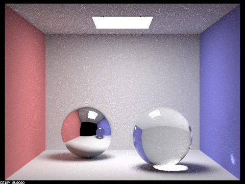

|
|
|
|
|
For this project, we chose to implement Part 1 and Part 2 to model mirror, glass, and microfacet materials. After implementing functions that trace light rays' interaction with these materials, we could render some pretty images with mirror, glass, and different metal conductors.
In this part, we implemented modeling for mirror and glass materials. In order to do this, we need to implement reflect and refract functions. For the reflect function, we simply reflect $w_o$ about normal vector (0,0,1) and store result in $w_i$. After implementing reflection, we were able to model mirror matierials. To model glass materials, however, we need another function to simulate refraction through glass. The refract function takes in $w_o$, $w_i$, and a single $ior$, which is the index of refraction. We used Snell's Law to calculate whether there is internal reflection. If there is internal reflection, we return false and do not store anything in $w_i$. Otherwise we update $w_i$ accordingly.
To complete this part, we implement the GlassBSDF::sample_f function.
We first check if there is total internal reflection by calling the refract
helper function we just implemented. If there is total internal reflection
(there is no refraction), we assign pdf to $1.$ and return the reflectance divided by
$cos(\theta)$, where $\theta$ is the angle between $w_i$ and the normal vector. Otherwise,
we use Schlick's coefficient, $R$ to approximate the ratio of reflection to refraction.
We would thereby have reflection with probability $R$ and refraction with probabiltiy $1 - R$.
We then draw a random sample from a uniform distribution and if it falls within $R$ then we reflect.
Otherwise, we refract and return $(1 - R) * $ transmittance $ / ( cos(\theta) * \eta^2 ) $.
Now we compare rendering results with different values of max_ray_depth.
Show a sequence of six images of scene `CBspheres.dae` rendered with `max_ray_depth` set to 0, 1, 2, 3, 4, 5, and 100. The other settings should be at least 64 samples per pixel and 4 samples per light. Make sure to include all screenshots.
|
|
|
With may_ray_depth at 0 or 1, we don't see any reflection or refraction. Because we are not considering any bounces, we only see light rays directly emitted by the source. So we cannot see the spheres.
|
|
|
With may_ray_depth at 2, we start seeing the mirror, but still not the glass sphere. With may_ray_depth at 3, we finally start to see the glass sphere. However, the reflection of the glass sphere in the mirror sphere still appears dark, while in reality it should be transparent.
|

|
|
With may_ray_depth at 4, the reflection of the glass sphere on the mirror sphere appears transparent. With max_ray_depth at 4, light on the wall refracted by the glass sphere appears brighter than that in the image in which max_ray_depth = 4.
|
|
With may_ray_depth at 100, it looks very similar to the rendered result from max_ray_depth at 5 because it is unlikely that we have light rays that bounce for a number of times that much exceeds 5.
In this next part, we implemented functions to model microfacet materials.
These include calculating the normal distirbution function,
calculating the Fresnel term, and performing importance sampling, and
finally combining them all together to evalute the BRDF.
We first implemented the BRDF evaluation function Microfacet::f(),
with the Fresnel term and normal distribution function abstracted. We
simply computed $f$ using the equation:
$f = \frac{F(w_i) * G(w_o, w_i) * D(h)}{4 * (n \cdot w_o) * (n \cdot w_i)}$
Next, we computed the normal distribution function, which models the distribution of the surface normals of the microfaceted object. We adopt the Beckman distribution evaluated at the half-angle vector. Then we computed the Fresnel term, which is approximated by first computing Fresnel terms at R, G, B channels separately and then combining the values. Finally, we implemented importance sampling in order to optimize our pipeline to render higher-quality, less noisy images. We first randomly sampled two values $r_1$ and $r_2$. We use these values in the inversion method to obtain $\theta_h$ and $\phi_h$. Then we obtain the pdf of sampling $w_i$ with respect to solid angle by first computing the pdf of sampling $h$ with respect to solid angle, and then use the relationship between this pdf and the pdf of sampling $w_i$ to obtain the final pdf.Show a screenshot sequence of 4 images of scene `CBdragon_microfacet_au.dae` rendered with $\alpha$ set to 0.005, 0.05, 0.25 and 0.5. The other settings should be at least 128 samples per pixel and 1 samples per light. The number of bounces should be at least 5. Describe the differences between different images. Note that, to change the $\alpha$, just open the .dae file and search for `microfacet`.
Below are images rendered with different values of $\alpha$. Since $\alpha$ defines the roughness of the material, we can see that increasing the $\alpha$ value causes the object to appear more rough and less shiny.
|
|
|
|
|
|
Show two images of scene `CBbunny_microfacet_cu.dae` rendered using cosine hemisphere sampling (default) and your importance sampling. The sampling rate should be fixed at 64 samples per pixel and 1 samples per light. The number of bounces should be at least 5. Briefly discuss their difference.
|
|
|
The above images show rendering results using cosine hemisphere sampling and importance sampling. We can see that cosine hemisphere sampling does not accurately model the light reflecting off of microfacted material since it evenly sample across a hemisphere. The image rendered with importance sampling is much more realistic because it samples according to the adopted Beckman distribution of surface normals.
Show at least one image with some other conductor material, replacing `eta` and `k`. Note that you should look up values for real data rather than modifying them arbitrarily. Tell us what kind of material your parameters correspond to.
|
|
This final image is rendered using silver's $\eta$ and $k$ values corresponding to R, G, B wavelengths at 614 nm, 549 nm, and 466 nm. We thereby get a silver bunny!